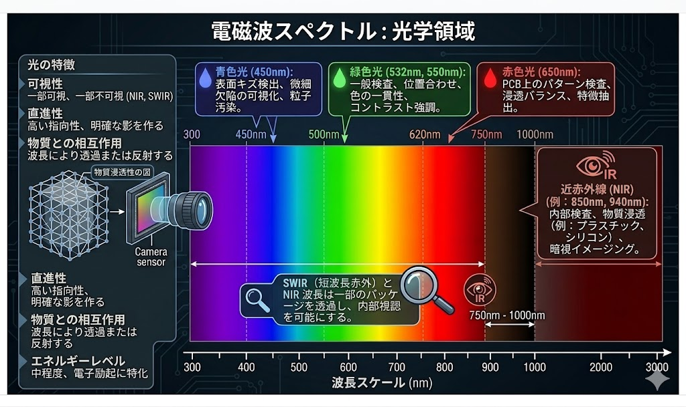

電磁波スペクトルと光学センシング
「物理的な正解」を撮像し、自動判定の信頼性を最大化する
01. 光学領域の特性詳細（UV - 可視光 - 赤外）

クリックして拡大：波長ごとの物質相互作用と実務用途
青色光 (450nm)
- 表面キズ検出、微細欠陥の可視化。
- 粒子汚染の強調。
- 散乱特性を利用した高コントラスト撮像。
緑色光 (532nm / 550nm)
- 一般検査、正確な位置合わせ。
- 色の一貫性とコントラスト強調。
赤色光 (650nm) / 赤外
- PCB上のパターン検査、浸透バランスと特徴抽出。
- NIR/SWIR: 樹脂・パッケージを透過し内部を可視化。
- 水分の有無を検出するセンシングへの応用。
02. 光と電波の連続性（理論全体図）

03. 幾何・波面補正技術：物理層でのエラー解決
波面制御 (AO)

波面補償光学の原理
空気の揺らぎや温度変化による屈折率ムラ、レンズの不完全さによる光の「波面」の乱れをリアルタイムで修正し、理論上の限界解像度（回折限界）を引き出します。
- 波面センサ: 光のデコボコ（歪み）をリアルタイム計測。
- 可変形状ミラー (DM): アクチュエータが鏡の形状を微細に変化させ、逆方向の歪みを与えて打ち消す。
- DXメリット: 過酷な工場環境でも動的に収差を打ち消し、鮮明度を維持。
テレセントリック (TC)

ゆがみ（ディストーション）の解決
主光線を光軸に対して「平行」に整える特殊設計により、レンズ特有のゆがみや視差による寸法エラーを物理的に消去します。
- 視差の排除: 物体が上下に動いても画像上の大きさが変化しない。
- 絶対精度: 0.01%〜0.1%の極低ディストーション。
- DXメリット: ソフトウェア側の補正負荷を大幅軽減し、撮像時点で「正しい座標」を確定。
💡 DX自動化の核心
「撮った後にソフトで頑張る」のではなく、波長特性と高度光学制御を使い、
「撮る瞬間に物理層で正解を確定させる」ことが、高信頼な無人化への最短ルートです。